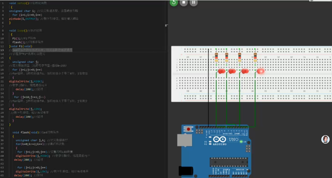

Exercise 2: Arduino Input & Output
View your assignment
Arduino 8-Channel Water Light Project Documentation
1. Project Overview
This project is developed based on Arduino microcontroller to realize dynamic effects of 8-channel LED water light. It contains two core dynamic logics: the one-way water light effect where LEDs light up sequentially from left to right and then turn off sequentially from right to left, and the overall cyclic flashing effect of all LEDs.

2. Overall Code Architecture
The project code adopts the standard Arduino program structure, divided into three parts: initialization function, main loop function and custom functional subroutines. The modular design performs separate functions as follows:
- setup() Initialization Function: Executes only once after power-on, completing the output mode configuration of pins 1-8 to lay a hardware foundation for light control;
- loop() Main Loop Function: Runs in an infinite loop after power-on, calling the water light effect subroutine and the overall flashing subroutine in turn to realize dynamic light switching;
- F1() Custom Water Light Subroutine: Realizes the core water light effect of LEDs lighting up one by one from left to right and turning off one by one from right to left;
- flash() Custom Flashing Subroutine: Realizes the synchronous on-off cyclic flashing effect of all 8-channel LEDs.
3. Segmented Code Function Analysis
3.1 Initialization Function setup()
void setup()//Initialization function
{
unsigned char i; //Define variable for pin loop configuration
for (i=1;i<=8;i++)
pinMode(i,OUTPUT); //Set pins 1-8 to output mode
}Function Analysis: This function is executed only once after the device is powered on. It traverses digital pins 1~8 through a for loop and configures them to output mode uniformly, enabling the pins to output high and low levels and control LED status, so as to avoid abnormal light operation caused by incorrect pin mode.
3.2 Main Loop Function loop()
void loop()//Execution function
{
F1();//Call water light effect subroutine
flash();//Call overall flashing subroutine
}Function Analysis: As the core execution body of the program, this function runs in an infinite loop after power-on. It first executes the F1 water light effect, then jumps to execute the flash overall flashing effect. The two sets of effects cycle alternately to form a complete dynamic light display.
3.3 Water Light Subroutine F1()
void F1(void)
//LEDs light up from left to right and turn off from right to left
{
unsigned char j;
//First loop: Light up LEDs from left to right
for (j=1;j<=8;j++)
{
digitalWrite(j,HIGH); //Output high level to light up corresponding LED
delay(200);//Delay 200ms to form gradient water light effect
}
//Second loop: Turn off LEDs from right to left
for (j=8;j>=1;j--)
{
digitalWrite(j,LOW); //Output low level to turn off corresponding LED
delay(200);//Delay 200ms
}
}Function Analysis: This subroutine consists of two core loops to realize the precise one-way water light effect:
- Forward lighting loop: The variable j increases from 1 to 8, triggering pins 1~8 to output high level in turn. LEDs light up one by one from left to right, and each light state lasts for 200ms to form a progressive water light vision effect;
- Reverse extinguishing loop: The variable j decreases from 8 to 1, triggering pins 8~1 to output low level in turn. LEDs turn off one by one from right to left, matching the forward lighting logic to complete a full water light action.
【F1 Subroutine Effect Diagram: Insert the dynamic effect diagram of left-to-right lighting and right-to-left extinguishing water light here】
3.4 Overall Flashing Subroutine flash()
void flash(void)//LED flashing program
{
unsigned char j,k;
//Outer loop: Control flashing times, total 3 times
for(k=0;k<=2;k++)
{
//Light up all LEDs
for (j=1;j<=8;j++)
digitalWrite(j,HIGH);
delay(200);
//Turn off all LEDs
for (j=1;j<=8;j++)
digitalWrite(j,LOW);
delay(200);
}
}